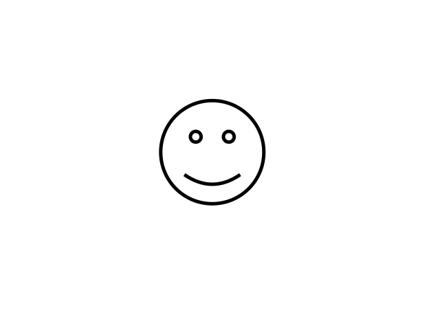
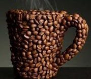

Webbteknisk introduktion!
Jag håller på att göra färdigt laboration 1
Skrivt av Sahib,2013-09-17
Ansvarig för materialet på denna sida är Sahib Sahib
SVG

Skrivt av Sahib,2013-09-18
Video-taggen
Länk
Tack ska ni ha!Skrivet av Sahib.
Min första utomlands resa.
För några år sedan, åkte jag med min familj till syrien. Vi reste med bilen och jag satt bredvid fönstret. Jag var liten men kommer ihåg mycket av resan.
 Jag tittade hela tiden genom fönstret, för det var min första resa
utomlands, och jag ville inte missa något. Palmträd, floden, vatten
strömmar och odlings gårdar kunde ses hela vägen inom Irak, och när
vi passerade gränsen mellan Irak och Syrien, då allting har ändrats.
Man kunde inte se palmträd längre, inte sand heller. Men det var
grönt och fint på ett annat sätt, oliver träd eller frukt träd sträckte
sig hela vägen.
Jag tittade hela tiden genom fönstret, för det var min första resa
utomlands, och jag ville inte missa något. Palmträd, floden, vatten
strömmar och odlings gårdar kunde ses hela vägen inom Irak, och när
vi passerade gränsen mellan Irak och Syrien, då allting har ändrats.
Man kunde inte se palmträd längre, inte sand heller. Men det var
grönt och fint på ett annat sätt, oliver träd eller frukt träd sträckte
sig hela vägen.
Vi hade Tartous som ett mål, och för att komma fram dit så var min pappa tvungen att köra från öst till väst,genom hela syrien. Man kan inte beskriva hur fint det var hela vägen.När vi började närma oss så kunde vi känna fukten i luften och när jag såg havet för första gången i mitt liv, då började vi allihopa skrika av glädjen.
Vi bodde i en av dom många stugor som fanns längst stranden, där kunde bara öppna dörren och hoppa i vattnet, för det var jätte när havet. Och vi som barn sprang direkt till havet och doppade våra fötter i vattnet. Glädjen gick inte och beskriva. Folk var mycket trevliga, gästvänliga, och nyfikna.
På dagen vi var hela tiden vid havet, vi t.o.m. åkte en runda i en hyrbåt. Vattnet var genomskinligt, klar blå, vi kunde spana några stora sköldpaddor. Solen sken hela dagen på en molnfri himmel.På kvällen kunde man göra många aktiviteter för där fanns det nöjes parker, resturanger med ute servering, och cyckel uthyrningar.Syrien är ett land som man blir kär i. Den har olika landskap, såsom bergar, skogar, hav, sjöar, och vattenfall. Klimatet är underbart som är ständigt varmt och solet på sommaren. Männikorna är underbara, de öppnar sina hus för främmligar, oavset var de kommer ifrån, vilket etnisk de är. Jag hoppas att stitrationen ordna sig i Syrien, så att jag åter besöker det underbara landet.
Skrivet av Sahib 2013-09-25
Uppgift3-3
Har jobbat med laboration 3 copycat , uppgift 3-3 .
Den var lite svårt faktiskt tycker jag , eftersom man fick inte ändra eller lägga nåt på index filen.
Det tog mer än fyra timmar för att göra färdig denna sida alltså att den ska se ut som bilden som vi fick.
Till sist vill jag säga att även om den var lite svårt , men var ju också roligt.
Skrivet av Sahib 2013-10-02
Youtube